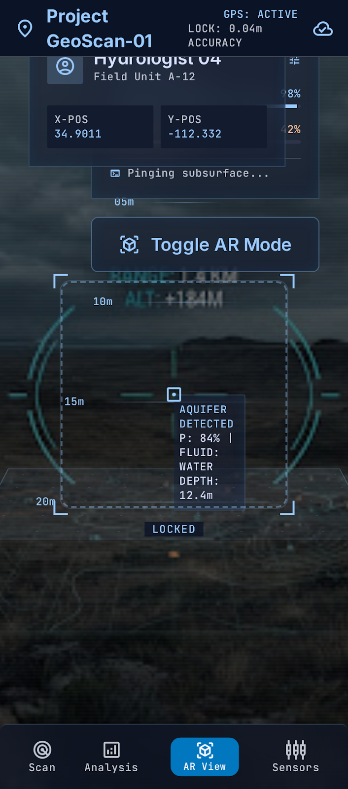
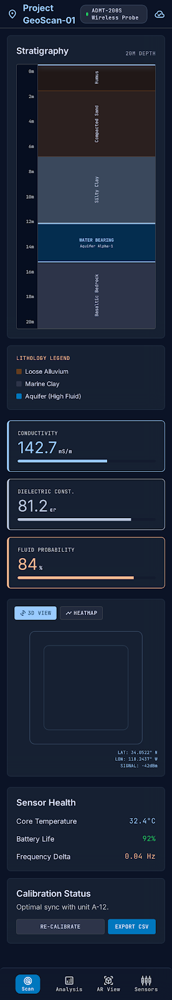
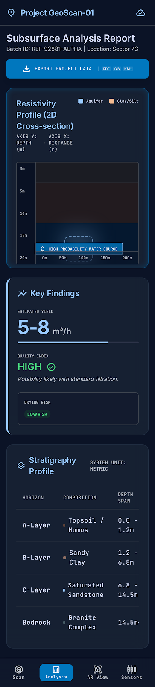
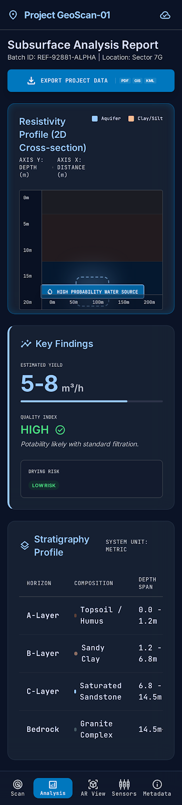
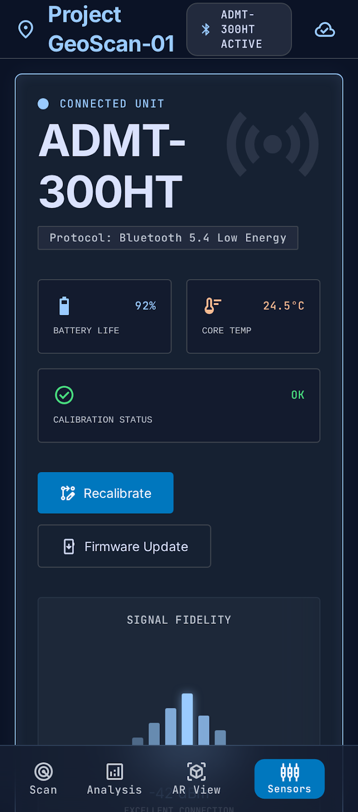

Google Stitch — Multi-screen mobile application for geological & groundwater analysis

Augmented reality visualization of underground layers and water tables.
View Screen
Live scanning interface for real-time ground and subsurface data collection.
View Screen
Updated export view for sharing and archiving geological data.
View Screen
